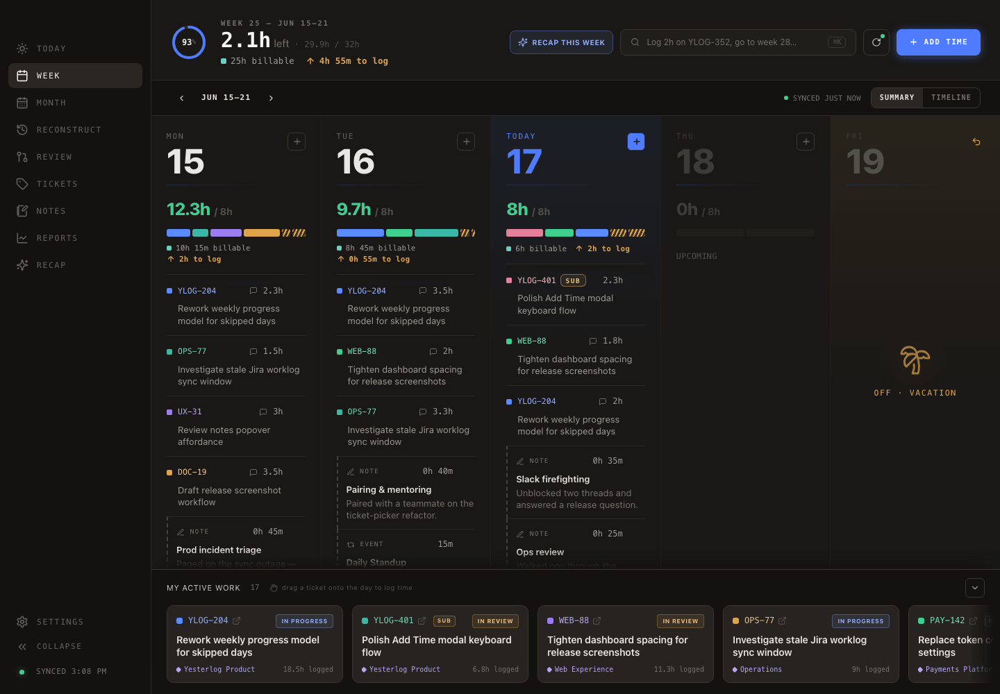
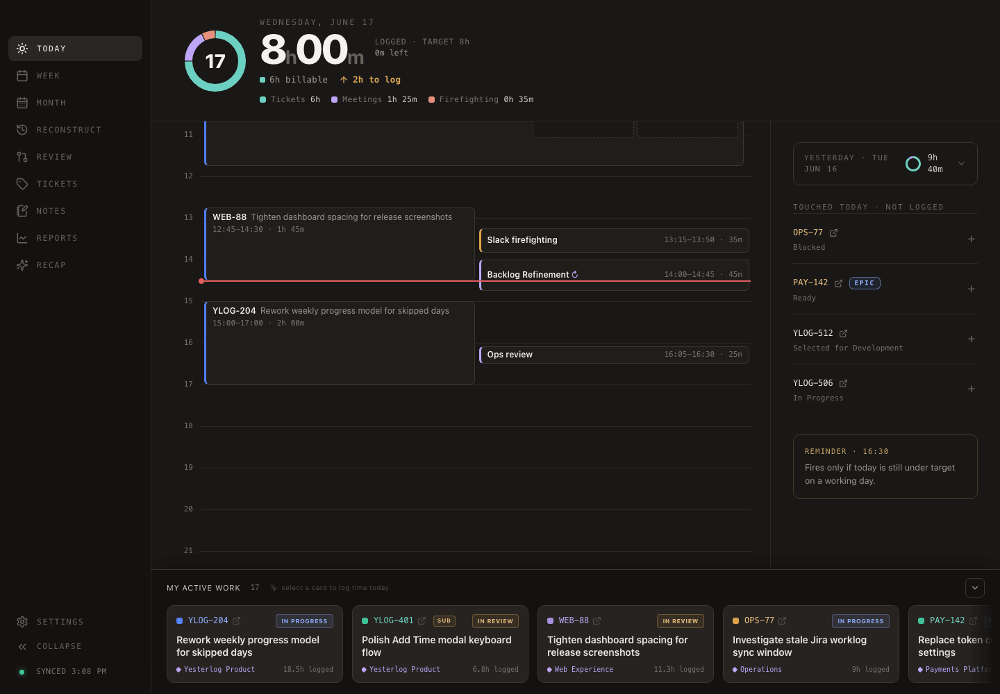
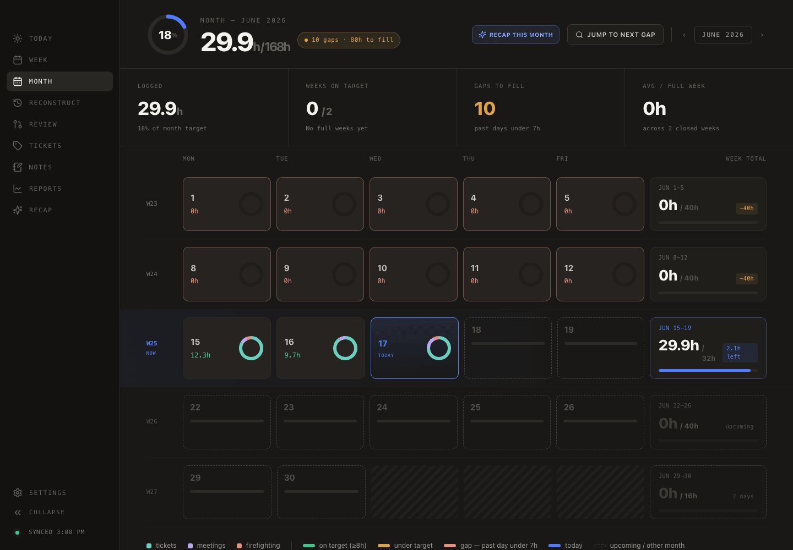
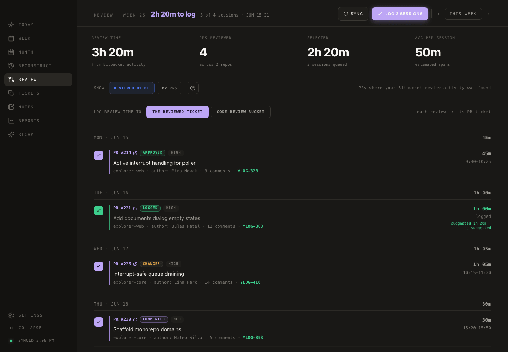
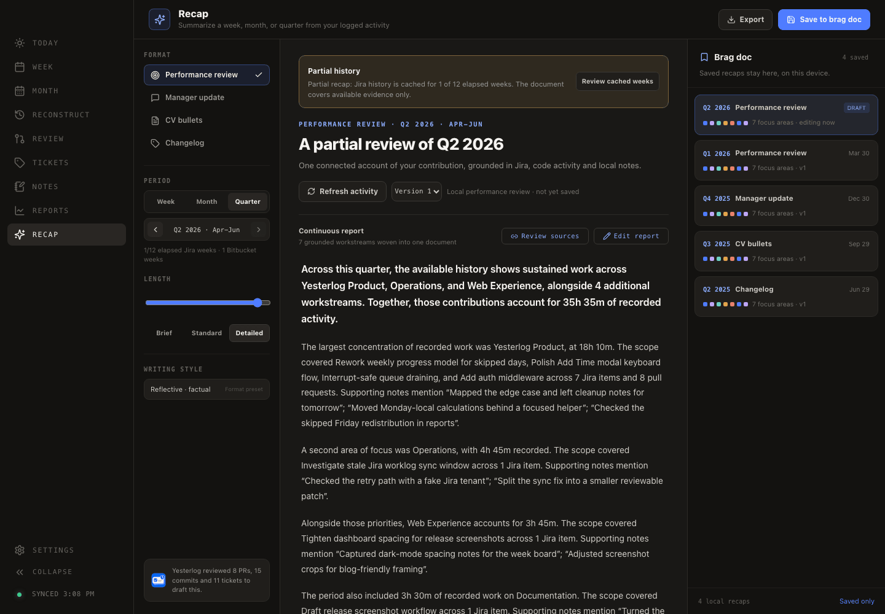
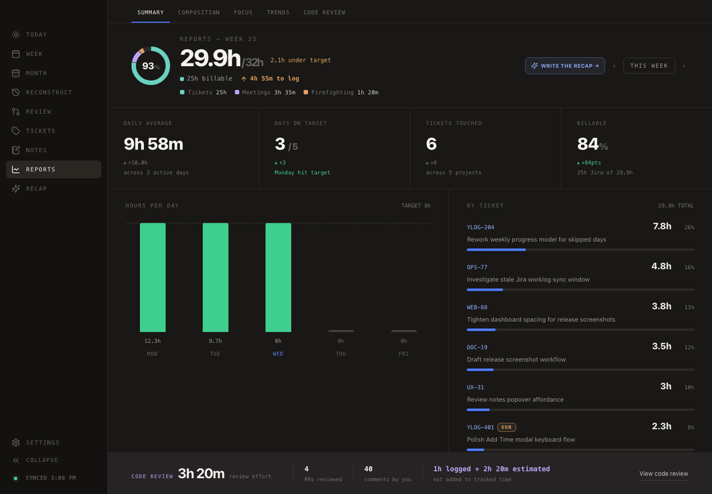

Reconstruct your days from Jira and code activity. Complete accurate worklogs. Turn the same grounded history into standups, manager updates, performance reviews, and CV‑ready evidence.

78% logged 2‑click logging → drag onto any dayYour manager wants every minute logged as a KPI. Yesterlog remembers the work behind the hours — then turns it into a record you can actually use.
And now it's Friday afternoon and you're squinting at an empty Jira worklog, trying to remember what Tuesday‑you actually did. Yesterlog reconstructs the day from Jira activity, commits, pull‑request reviews, meetings, and local notes — then carries that same grounded history into standups, manager updates, performance reviews, CV bullets, and changelogs.
Reconstruct. Complete. Recap. The rest is supporting evidence.
Pick a ticket, tap a duration preset, jot a note, done. A "touched today, not logged" rail nudges you about tickets you clearly worked on, and a target bar shows exactly how much is left in the day.

The whole month as a calendar, color‑coded by whether each day hit target. The "jump to next gap" button walks you straight to the days you forgot — backfilling a sloppy month takes minutes, not detective work.

Connect Bitbucket Cloud and Yesterlog estimates how long you spent reviewing each pull request. Tick the sessions you want, choose where they land, and log them all to Jira in one batch. Strictly read‑only on the Bitbucket side.

Choose a week, month, or quarter, then shape the same evidence into a standup, manager update, performance review, CV draft, or changelog. Inspect every source, compare versions, export the result, and save the strongest snapshots to your local brag doc.

Daily average, days on target, tickets touched, billable percentage, an hours‑per‑day chart, and a per‑ticket breakdown. Browse previous weeks, then export to CSV for the inevitable "can you send me the spreadsheet?"

Yesterlog reconstructs a forgotten day from the signals it already syncs — your Bitbucket commits, PR reviews, and the Jira time already logged — laid out on a 09:00→18:00 timeline. Drag each signal onto the hour it belongs to, fine‑tune any duration, and watch the day add up.
It works completely without AI. For optional polish, choose Ollama for fully local processing, Anthropic through the Claude CLI, or OpenAI through the Codex CLI. Cloud providers use your existing CLI login and receive best‑effort‑redacted day signals. AI is off by default; Yesterlog has no hosted backend or telemetry.
Your data lives on your machine in IndexedDB. Yesterlog connects directly to Jira, optional Bitbucket, and—only when you enable one—your selected AI provider.
Grab the installer for your platform. Then head to Settings → Jira, paste your site, email and API token. That's the whole setup.